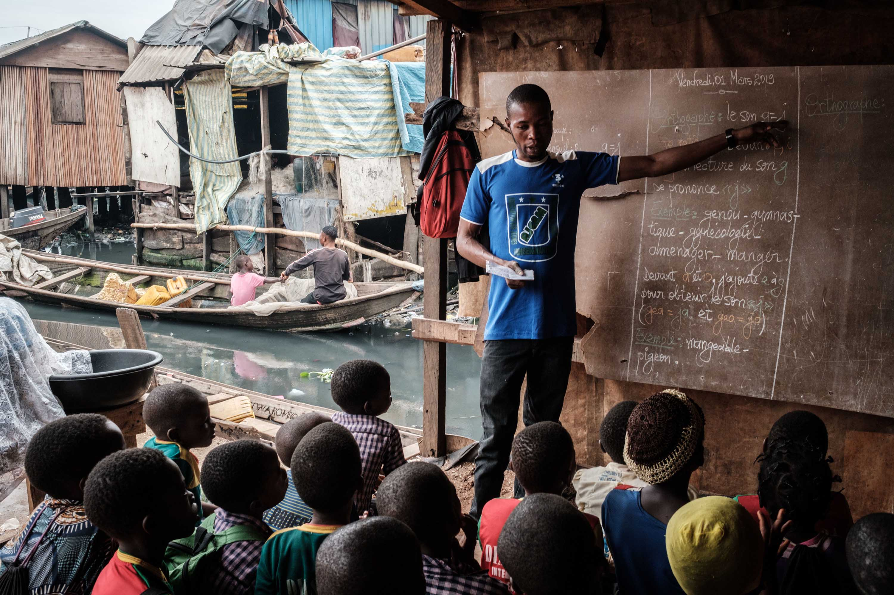

Examples of Hope and Resilience
Other ways residents of Makoko have shown hope is that they have
created healthcare relief systems, which were well needed. School
children also had their eyes screened for free. This was because
most of the children were not doing so well academically due to their poor vision.
To bring it all together, I truly believe that Makoko is a slum of hope. They use
the little resources that they have and attempt to make the best of their unfortunate situation.

Back